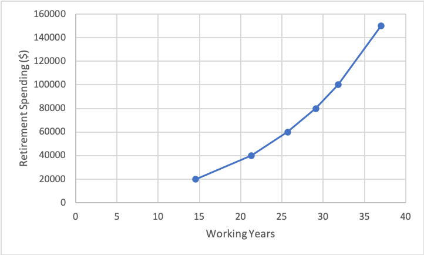

Financial independence / retire early (FIRE) is a relatively recent movement that promotes the concept of—you guessed it—being financially independent and being able to retire early, which is a natural byproduct of FI. This post discusses FIRE in its entirety: FIRE motivators, the best methods of achieving FIRE, what to do when you've made it, and others.
The average, non-FIRE person spends around:
\[(40 - 50) \frac{\text{hr}}{\text{wk}} \times 50 \frac{\text{wk}}{\text{yr}} \times 40 \frac{\text{working yr}}{\text{life}} = (80000 - 100000) \frac{\text{hr}}{\text{life}}\]assuming an average job of 40-50 hours per week, 2 weeks of vacation per year, and 40 working years. The hours can vary wildly (some bankers can work upwards of 100 hours per week, while some lucky business owners only work a leisurely two hours per day), as can the vacation and number of working years.
Regardless, the primary motivator for FIREing seems to be simply getting time back to do what you want. Cutting the number of working years by 20 saves:
\[(40 - 50) \frac{\text{hr}}{\text{wk}} \times 50 \frac{\text{wk}}{\text{yr}} \times 20 \frac{\text{working yr}}{\text{life}} = (40000 - 50000) \frac{\text{hr}}{\text{life}}\]Think about all that can be done with the 40,000-50,000 hours of extra time in the 40-60 age range. Traveling around the country or world; catching up on books, video games, movies, or television shows; projects around the house; seeing old friends and family; spending time with children; volunteering in the community; pursuing hobbies; riding bikes on low-traffic trails; even nothing (although you don't need to FIRE for that, as Lawrence so sagely states). The list goes on and on and on. Every day is Saturday—no more having an alarm clock tell you when you need to get up to avoid having your boss get angry at you for being late. No more staring at the clock waiting for it to hit 5:00pm so you can leave and do things that interest you. No more waking up on Monday morning dreading the week and its meetings that happen week after week, month after month, year after year.

A sense of freedom accompanies the FI part of FIRE. Knowing you don't have to work is a liberating feeling and one that not many people get to experience. You can quit on your terms without fear of not being able to find another job or having to cut costs to make rent.
Despite all of these benefits, FIRE still poses issues to some, especially in regards to relationships and purpose.
The average American retires at the age of 66. Assuming you FIRE before the age of 50, that's at least 16 years that you spend 8 hours of the day away from work friends (other activities can fill this social void, like volunteering). The main strain stems from jealousy: you are living the retirement life, while they have to continue working at a job they don't care about for the next 20 years due to either poor financial decisions or prioritizing other expenses over savings.
Lots of people derive their life's purpose from work. When retiring early, you are depriving yourself of that purpose at least 16 years earlier than expected. This is why after FIRE plans are so important. Going from being a high-achiever at work and feeling a sense of contribution and accomplishment to doing nothing during retirement is likely to cause a major shell shock. More on this in the Post-FIRE section.
FIRE is both a general description of being financially independent and a specific tier in the FIRE world. Below are descriptions of the FIRE variants:
LeanFIRE is the variant for those wanting to FIRE as soon as possible. The amount of money saved is less than FIRE and significantly less than FatFIRE, but the retirement lifestyle is less lavish, decreasing retirement spending.
FIRE is the standard variant. Savings are in between LeanFIRE and FatFIRE, allowing for a more comfortable retirement.
FatFIRE is the high-end of FIRE. The savings are well into the millions of dollars, allowing a luxurious retirement full of travel, Michelin restaurants, and an unmatched sense of financial security.
FatFIRE is much less attainable than LeanFIRE or FIRE. The careers of people who FatFIRE or want to FatFIRE are quite similar in both position and status (manager, director, etc). Just based on the manual compilation of the Google Sheets document, being in one of the following career paths/industries is most effective, especially if management-level is achieved:
While the "Barista" part is substitutable with any part-time job—making this variant [part-time job]FIRE—it does a good job of explaining BaristaFIRE. Save enough money through full-time work that you need only to work a basic part-time job to continue living comfortably. Say your yearly spending is $40,000 and you have enough saved up to spend $30,000 per year for the rest of your life (more on how this $30,000 is calculated later). You still need $10,000 to cover your expenses, which is easily satisfied through a part-time job:
\[20 \frac{\text{hr}}{\text{wk}} \times 50 \frac{\text{wk}}{\text{yr}} \times (10-15) \frac{$}{\text{hr}} = (10000 - 15000) \frac{$}{\text{yr}}\]Depending on the wage, you may be able to work less ($15/hour = 13 hour/week to reach $10,000/year) or have more spending money every year.
CoastFIRE is similar to BaristaFIRE, but instead you use your investment returns and the principle of compounding interest to coast to FIRE.
| Variant | Annual Spending ($) |
|---|---|
| LeanFIRE | <40,000 |
| FIRE | 40,000-100,000 |
| FatFIRE | >100,000 |
| CoastFIRE | Varies |
| BaristaFIRE | Varies |
Deciding which variant you want to achieve depends on a few things:
After your variant has been chosen, you need to calculate your FIRE number, the amount of money you need to retire. Once you have your FIRE number, all that's left to do is achieve it.
One of the best FIRE calculators out there is Engaging Data's FIRE Calculator. It takes into account:
The "Retirement Spending" field is where your chosen variant comes into play. Assuming everything is held equal with the initial values (age 32, $25,000 in current investments, etc), the following numbers are found for each variant:
| Retirement Spending ($) | FIRE Number ($) |
|---|---|
| 20,000 | 535,000 |
| 40,000 | 1,070,000 |
| 60,000 | 1,605,000 |
| 80,000 | 2,140,000 |
| 100,000 | 2,675,000 |
| 150,000 | 4,012,500 |
While retirement spending is linear with FIRE number, it is exponential with age, as shown in the following graph:
This means that the longer you work, you will save exponentially more money (keeping all things the same).
Only liquid assets should be included while measuring your FIRE number. This includes stocks, bonds, and cash (as shown in the FIRE calculator). Homes, cars, and other expensive items should not be included.
There are a variety of investments you can make to increase your savings. The stock market is the most common: stocks, bonds, and mutual funds can all be purchased with the hope and expectation that they will increase in value. Private ventures can be invested in, namely businesses. While cliche, "investing in yourself" through education can yield large returns in both the short- and long-run.
Index funds are one of the more popular investment vehicles people use to achieve FIRE. They work by tracking a specific market index, which is a portfolio that represents a portion of a market. Indices include:
Index funds may also be available as exchange-traded funds (ETF).
In 2008, Warren Buffett bet $1 MM against Protégé Partners LLC that "an index fund would outperform a collection of hedge funds over the course of 10 years". Buffett won. This anecdote shows the power of index funds: simply park your money in there and let time do the rest. This takes the management and (some of) the stress out of investing.
Index funds generally come with low expense ratios, i.e., the amount the investor pays to help cover the fund's operating expenses. For example, an expense ratio of 1% would cost the investor $1 per $100 they had invested. Vanguard offers some of the lowest expense ratios in the industry, with $VTSAX offering a mere 0.04% ($4 fee for every $10,000)!
$VTSAX average annual returns are:
| Time Period (Year) | Return (%) |
|---|---|
| 1 | 11.34 |
| 3 | 9.54 |
| 5 | 9.15 |
| 10 | 12.81 |
| Inception (Nov 2000) | 6.70 |
You would be hard-pressed to find a financial manager that is able to beat these returns.
Some funds are actively-managed, causing both expense ratios and minimum investment amounts to increase substantially. According to Investopedia, "the average expense ratio for actively managed mutual funds is between 0.5% and 1.0%. They rarely exceed 2.5%." This is 12.5-25 times larger than Vanguard's 0.04%, a significant difference. These fund expenses obviously deplete raw earnings, in some cases making it worse than being in an index fund.
Vanguard's mutual fund performances can be found here.
401(k) refers to the 401(k) subsection of the Internal Revenue Service (IRS)'s Internal Revenue Code (IRC, official text here). In essence, it's a retirement plan that receives special tax benefits. A few notes:
Contributions into the account are not taxed, meaning if you choose to put in 5% of your $1,000 paycheck, $50.00 is going in. However, withdrawals are subject to federal and state income tax, as noted in the third bullet point above. The reasons for this are multiple:
Some employers offer 401(k) dollar-for-dollar matching up to a certain percent of the employee's salary. For example, if a company offers up to 5% matching on your annual salary of $100,000 and you contribute 5%, or $5,000, the company will also contribute $5,000. This is essentially free money and most personal finance resources highly recommend maxing out 401(k) contributions up to the employer's maximum match. The average employer match is 4.3%.
Note that the employer match amount does not count towards the contribution limit. For example, if your salary is $100,000 and your employer's match is 10%, you can put in $19,500 of your money plus the $10,000 of your employer's money for a total of $29,500 into the 401(k).
An individual retirement account (IRA) is similar to a 401(k), but has a few differences and variants.
Contributions into traditional IRAs are not taxed. Withdrawals (beginning at age 59.5 for no withdrawal penalty) are taxed at the owner's current income tax rate, not the tax rate they contributed at. Because the owner is likely to be in a lower tax bracket when they withdraw, this is advantageous because less tax will be paid. Contributions are also tax-deductible, meaning if you make $100,000 and contribute $6,000 to your IRA, the government will pretend you only make $94,000.
Contribution limits are $6,000 for owners younger than 50 and $7,000 for owners older than 50.
Roth IRA contributions are taxed immediately and are not tax-deductible. Contributions can be withdrawn at any time, but earnings from contributions can only be withdrawn after age 59.5 for no withdrawal penalty.
Contribution limits are $6,000 for owners younger than 50 and $7,000 for owners older than 50. However, income can prohibit some from contributing to a Roth IRA. See Schwab's table for Roth IRA contribution limits.
There is a method around the income limit, called a Backdoor Roth IRA. This is done by rolling traditional IRA money over into a Roth IRA account or converting the entire IRA account into a Roth IRA.
A rollover IRA simply transfers the IRA funds of a former employer-sponsored account to a traditional IRA while maintaining the tax-deferred status.
HSAs are used to help pay for medical costs when a person's health plan has a high deductible.
Contributions limits are $3,600 for single coverage and $7,200 for family coverage (IRS).
A frugal lifestyle is most conducive to both achieving and maintaining FIRE. Finances are, in a sense, a zero-sum game: what you spend you don't save and what you save you don't spend.
Frugality can take many forms:
Getting accustomed to this lifestyle is helpful in both the short- and long-term: you get to FIRE faster through more saving, and are able to more comfortably maintain FIRE when achieved.
Marriage to a working partner is arguably the most efficient way to speed up and maintain FIRE. The income the partner brings home adds to the couple's savings.
The tax bracket will likely decrease if you file jointly. Compare the tax rate for "Single" vs. "Married, filing jointly" here.
Marriage to a working partner is also not necessarily a 2x increase in spending. Expenses like housing are shared, rather than individual.
The U.S. Department of Agriculture t studies the cost of raising a child. Based on their 2015 report, Expenditures on Children By Families, it costs a grand total of $233,610 to raise a child born in 2015 to 17 years of age. This cost varies wildly based on family and does not include the cost of higher education.
Children are undoubtedly a hindrance to FIRE, but often provide immense joy to the parents. Besides the total cost noted above, there is little to be analyzed. The decision is up to the parents.
Housing is most often the largest repetitive cost in a person's life, whether it be rent or a mortgage. It also depends on how often you move or plan to move.
SmartAsset's rent vs. buy calculator can check if it's cheaper to rent or buy over the course of a 30-year mortgage. The answer and assumptions are explained. Other costs, such as annual homeowner's insurance and home value increases, are also accounted for and can be changed.
Living at home with your parents is likely the cheapest reasonable option, assuming normal living expenses (rent, utilities, etc.) are cheaper than living independently. However, this poses relationship issues with friends and romantic partners (at least in Western cultures).
Defined as:
A person who wanders from place to place without a home or job.
More resources can be found on Vagabonding.net, including the author's book, Vagabonding: An Uncommon Guide to the Art of Long-Term World Travel (review). Notes on the book can be found here.
Like a dog chasing a car, it is surely strange to wake up on Monday to no alarm clock and realize you never have to go back to work. Sure, you can, but it's not financially required. So, what to do once you've FIREd?
Pursue the hobbies you never had time to work on while working 40-50 hour weeks. Some popular suggestions are (full list):
While travel can be expensive with airfare, lodging, activities, and nice restaurants, the costs can be trimmed down significantly through diligent planning.
Use a service that finds cheap flights. One of the favorites is Scott's Cheap Flights, which offers a free version and $49/year premium version. For example, flights to east Africa (Nairobi, Dar es Salaam, Entebbe) were found to be just under $600, when they are normally $1,200+!
Couchsurfing is a service that connects travelers to hosts offering a free stay in their home, whether it be a bed or literal couch. It poses a couple of advantages:
Other options, like hostels or tent camping, offer cheap or sometimes free lodging.
Working after retirement is not exclusive to one FIRE variant. A few options here (keep in mind hours are negotiable for most):
The following can be applied in both pre- and post-FIRE: it helps to reach and maintain FIRE, respectively.
By a floor job, I mean something that puts a floor in how bad and desperate your life can be. As in “I won’t be unemployed forever, I can always go do X”. Or “I won’t be working at this miserable fast-food place with this boss I hate forever, I can always just do X”. A lot of this depends on just how unlucky you are – the floor for high-IQ people with savings and college degrees is quite a bit higher than the floor for less smart people with no qualifications who need something now.